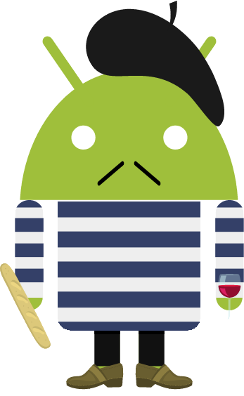

_ _
(_) | |
___ _ _ __ ___ ___ _ _| |__
/ __| | '_ \ / _ \/ __| | | | '_ \
| (__| | | | | __/\__ \ |_| | |_) |
\___|_|_| |_|\___||___/\__,_|_.__/
Accessible subs and audio in-cinema
Go to: http://www.cinesub.co.uk/
Download the Client and Server ADK
Start the Server on the Tv
Start the Client on the Tablet and the Phone.
*'Pair' to the TV
*Choose your Desired Subtitle Language
**en
**es
**fr
**de
**it
*Option opt-out of TTS (Text to Speech). Wea a headphone earbud to hear the translation (this is like having a babel fish in your ear!
*On the Google TV / server, choose a movie to play from the list and start playback.
The subtitles and TTS will now automatically display on the phone. Enjoy ^_^
*Notes: this should work like web.airdroid.com
*http://www.web.cinesub.co.uk/
*Our collaborative realtime text pad: https://pads.ccc.de/3USZIIwI0p
*Mindmap 'Modules': http://mind42.com/mindmap/55083e03-8e8b-4943-a1ae-8dd97b0574da?rel=urlv
*Mindmap 'Requirements': http://mind42.com/mindmap/7d55ff0d-faaf-4bee-9403-beccbeb79a1b?rel=url
*PhoneGap API Docs: http://docs.phonegap.com/en/2.1.0/
"Start Here":http://www.cinesub.co.uk/
Follow Setup Instructions for the Google TV, Tablet, Phone and Watch (all devices on the same wifi network, enable bluetooth for the watch etc)
Download the CineWebClient and CineWebServer ADKs to the respective device
Start the CineWebServer on the Google TV
Start the CineWebClient on the Tablet / Phone
'Pair' to the TV
Choose your Desired Subtitle Language {en,es,fr,de,it}
* Opt-out of TTS (Text to Speech)
* Wear a single headphone earbud for the babel fish effect during the movie!
* On the Google TV / server, choose a movie to play from the list and start playback
The subtitles and TTS will now automatically display on the phone. Enjoy!
* "Pair Here":http://web.cinesub.co.uk/
* Our collaborative realtime text pad: https://pads.ccc.de/3USZIIwI0p
* Mindmap 'Modules': http://mind42.com/mindmap/55083e03-8e8b-4943-a1ae-8dd97b0574da?rel=urlv
* Mindmap 'Requirements': http://mind42.com/mindmap/7d55ff0d-faaf-4bee-9403-beccbeb79a1b?rel=url
* PhoneGap API Docs: http://docs.phonegap.com/en/2.1.0/
* Notes: pairing should work like web.airdroid.com